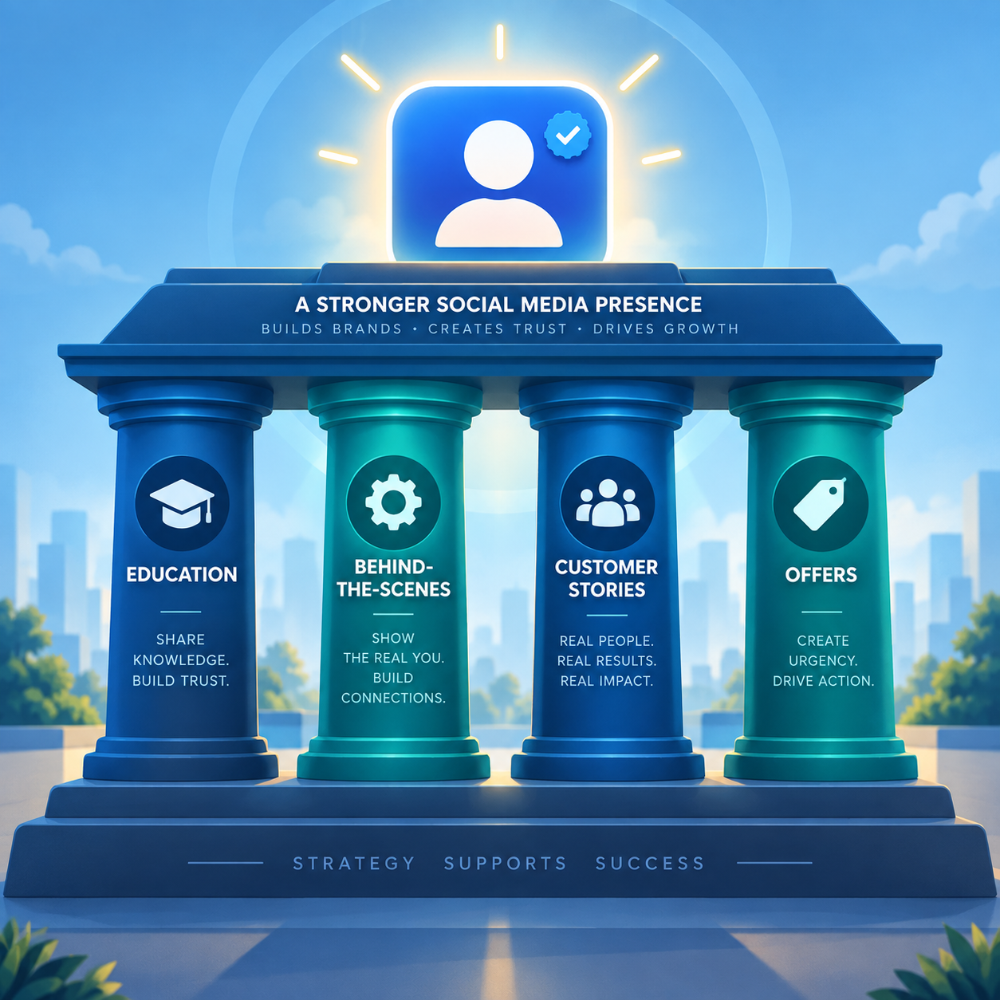
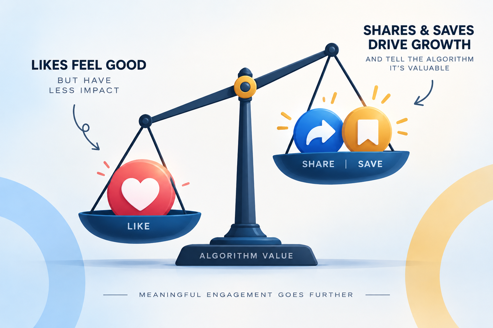
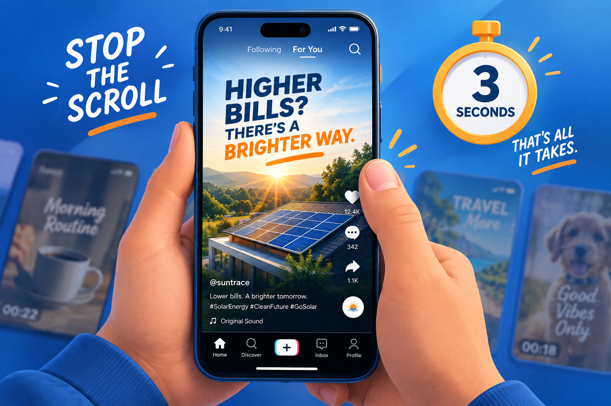
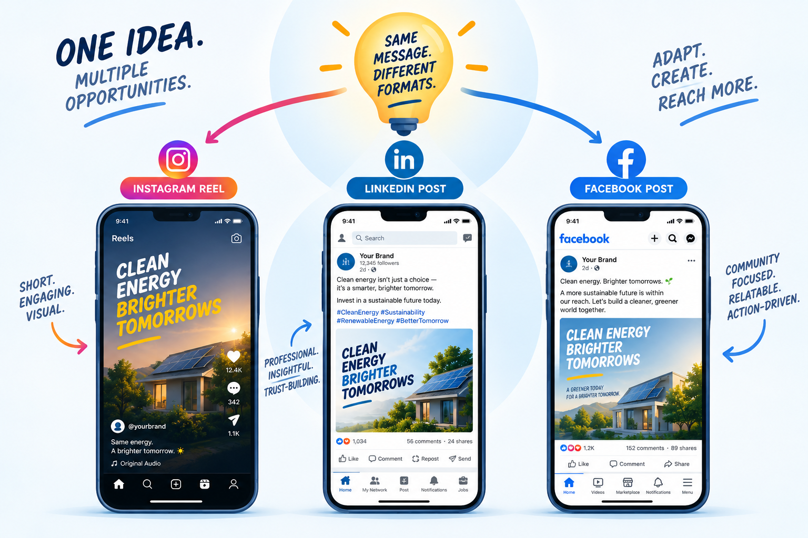
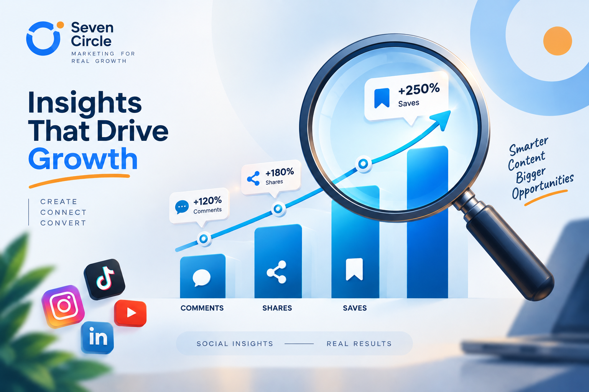

You post every single day. Reels, stories, carousels, product shots — you show up consistently, sometimes more consistently than accounts ten times your size.
And yet, the followers barely move. The likes come from the same 40 people. The comments are mostly from your friends and family.
It is exhausting. And it makes you start asking the wrong question: What am I doing wrong?
Posting consistently was never the goal. It was supposed to be the vehicle.

You are not lazy.
You are fighting the wrong battle.
Platforms do not reward content because it exists. They reward content people stop scrolling for: content that entertains, teaches or emotionally resonates.
Social media growth was never about effort alone. It is about strategy. Here are the five places that strategy usually breaks down.
1. You are posting at people, not for them
Most small business accounts post what they want to say — new arrivals, business updates and “we are open” reminders — instead of what their audience actually wants to see.
The fix: For every post, ask “Would a stranger stop scrolling for this, or does it only matter to me?” If it only matters to you, it is an update — not content.
2. There is no consistent content pillar or identity
Jumping between memes, product photos, quotes and random trends sends mixed signals to your audience and the algorithm. Nobody knows what to expect from your page, so nobody feels compelled to follow.
The fix: Build three or four clear content pillars — for example, education, behind-the-scenes, customer stories and offers — then rotate through them consistently.
3. You are optimizing for likes, not shares or saves
Likes feel good, but they barely move distribution on their own. Shares, saves and comments signal genuine value because they show that someone wanted to keep the idea or pass it on.

The fix: Create content people want to save for later — tips, guides and checklists — or send to a friend because it feels immediately relevant.
4. Your first three seconds are not earning attention
On every major platform, the algorithm decides quickly whether to keep showing your content based on whether people stop scrolling or swipe past.

The fix: Open with a bold statement, a question or a visual pattern interrupt. A slow intro or unclear thumbnail can hide your best message before it is ever seen.
5. You are treating every platform the same way
Reposting the exact same content, format and caption across Instagram, Facebook and LinkedIn ignores how differently each platform behaves.

The fix: Repurpose the core message, but adapt the format and tone: short, punchy hooks for Reels; more context and storytelling for LinkedIn; visual-first composition for Instagram grids.
Effort is not
the strategy.
Strategic accounts do not necessarily post more. They post with intention, then let the data guide what comes next.
| Just posting · Effort | Strategic content · Growth |
|---|---|
| Random topics, whatever comes to mind | Defined content pillars aligned to audience needs |
| Focused on likes | Focused on shares, saves and comments |
| The same content across all platforms | Format adapted for each platform |
| Inconsistent hooks and captions | Every post opens with a deliberate hook |
| No data review | Weekly review of what is actually working |
Watch what moves
the message forward.
Everyone watches follower count. Almost nobody watches watch time, saves and shares — the metrics that actually determine whether the algorithm pushes your content to new people.

You can have a smaller following than your competitor and still outgrow them, simply because your content is built to be shared, not just seen.
Read the numbers as clues. High watch time may mean the story works. High saves may mean the idea is useful. High shares may mean the audience sees itself in the message. Each signal can shape the next piece of content.
Turn posting into
actual growth.
At Seven Circle, we do not believe in posting for the sake of posting. Every post should have a job — awareness, trust or conversion — and a reason it earns attention in the first three seconds.
- Content strategy and pillarsBuilt around what your specific audience actually engages with.
- Platform-specific formattingAdapted content instead of copy-pasted content across every channel.
- Hook-first scripting and captionsDesigned to stop the scroll and make the value clear quickly.
- Performance trackingFocused on shares, saves and reach — not vanity likes.
- One recognizable brand systemContent creation, copywriting and branding working in the same direction.
You do not need to post more. You need every post to be built to actually go somewhere.
Questions worth
asking first.
How often should a small business actually post?
Quality and consistency matter more than raw frequency. Three to five well-strategized posts a week that are built to be shared will outperform daily posts with no clear pillar or hook.
Why did my engagement drop even though I am posting the same amount?
Algorithms shift and audiences fatigue on repetitive formats. A sudden drop usually signals it is time to refresh your content pillars, hooks or formats — not necessarily post more.
Do I need a different strategy for every platform?
Yes, at least in format and tone. The core message can stay consistent, but the delivery should match how people behave on that specific platform.
What matters more: followers or engagement?
Engagement. A smaller, highly engaged audience converts better and grows faster than a large, inactive follower count.
- Consistency needs a direction.
- Shares and saves reveal real value.
- Every platform deserves its own format.
Your social media does not need more noise. It needs a clearer reason for people to stop, care and pass the idea on.
Book a social media audit ↗